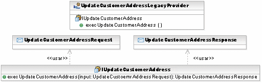
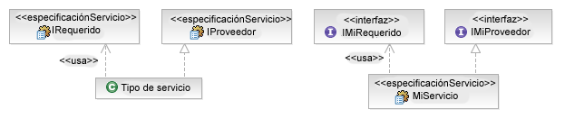
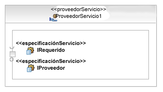
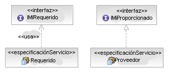
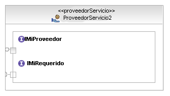

| Directriz: Servicio |
 |
|
| Elementos relacionados |
|---|
IntroducciónUn servicio es un artefacto clave en una arquitectura orientada a servicios pero, ¿qué es un servicio? A continuación se muestra la entrada del glosario de Rational Unified Process (RUP). Un servicio es un recurso de software (descubrible) con una especificación de servicio externalizado. Esta especificación de servicio está disponible para búsquedas, enlaces e invocación por parte de un cliente de servicio. El proveedor de servicio realiza la implementación de la especificación de servicio y también ofrece los requisitos de calidad de servicio al cliente de servicio. Los servicios se regirán por políticas declarativas y, por tanto, darán soporte a un estilo de arquitectura reconfigurable dinámicamente. Y, mientras la siguiente sección describe algunas de las sentencias clave de la entrada anterior, merece la pena contemplar un aspecto adicional de los servicios que realmente los diferencia de los elementos de diseño en tecnologías anteriores; los servicios a un nivel de granularidad que les permite identificarse a partir de un nivel empresarial. A continuación también trataremos la naturaleza de alineación empresarial de los servicios. DescubriblesLos servicios no son parte de una arquitectura de aplicación monolítica. Existen independientemente en el tiempo de ejecución de cualquiera y todos los servicios de una determinada solución. Esto quiere decir que necesitamos un método para el registro y el descubrimiento de servicios basado en criterios como el Artefacto: especificación de servicio que realiza, su Artefacto: proveedor de servicios, así como otras clasificaciones empresariales y técnicas. Este proceso de descubrimiento puede tener lugar durante el período de desarrollo para hacer coincidir los servicios ofrecidos con los servicios de soporte o tener lugar durante el tiempo de ejecución para permitir el suministro dinámico de los servicios (invocación mediada). Para ser descubrible, un servicio debe proporcionar un conjunto de metadatos que permita la categorización. Estos metadatos son parte de la especificación externa. Para obtener más información, consulte los apartados Concepto: cartera de clientes y Directriz: Mediación de servicios. Especificados externamenteLa especificación externa permite que un servicio publique sus detalles como interfaz, ubicación, políticas, clasificaciones, etc. sin necesidad de que el cliente tenga acceso al propio servicio. Normalmente dicha información se almacena entonces en una ubicación o registro de servicios especializado que de soporte a consultas de los metadatos. Actualmente en el mundo de los servicios web, el estándar aceptado para la descripción de interfaces de servicios es WSDL (Lenguaje de descripción de servicios web), que procede de World Wide Web Consortium. El producto de trabajo de especificación de servicio es realmente una combinación de tres componentes: la interfaz, el comportamiento y la especificación de políticas. De esta forma, la realización de estos distintos aspectos requiere algo más que la definición de interfaz suministrada por WSDL. Para obtener más información acerca de los registros de servicio, consulte el apartado Concepto: cartera de servicios. Basado en contratoEn la definición anterior del glosario observamos que la especificación de servicio ofrece una vista del proveedor de servicio y del cliente de servicio. Estas vistas se corresponden con dos mitades de un contrato que permiten la separación clara de la especificación de la implementación. La siguiente tabla describe cómo los distintos aspectos de una especificación de servicio afectan al proveedor y al cliente de la especificación.
Dicha especificación de servicio puede verse como una aplicación del diseño por contrato pero es un paso necesario a la hora de obtener servicios descubribles y reconfigurables dinámicamente. Alineación empresarialEn general, la conexión entre modelos empresariales que representa las operaciones de la empresa y los modelos de diseño para dar soporte a aplicaciones de TI se ha, como mucho, realizado de manera más holgada. En la mayoría de los casos, se han desconectado completamente. Aunque el RUP no proporciona instrucciones sobre la transición de modelos empresariales a modelos de guiones de uso de sistema (consulte la directriz Ir de modelos empresariales a sistemas), la conexión requiere un número de transformaciones a medida que el nivel de granularidad y abstracción cambia de perspectivas empresariales a perspectivas de TI. En general, está claro que los servicios se pueden clasificar en servicios empresariales o de infraestructura. Consulte el apartado Concepto: Cartera de servicios para obtener consideraciones sobre las clasificaciones de servicios. Un aspecto importante de SOA es que el nivel de granularidad de los servicios descritos en una solución orientada a servicios es tal que las operaciones proporcionadas por los servicios a menudo se identifican en el nivel empresarial. Este aumento en el nivel de granularidad en TI de soporte significa que, en muchos casos, las tareas identificadas en los modelos de proceso empresarial se pueden ejecutar directamente como operaciones en servicios. Por tanto, los usuarios empresariales de las soluciones de TI se convierten cada vez más en parte de los procesos de análisis y diseño. También es interesante observar que esta estrecha conexión con el modelo de proceso empresarial también asocia más directamente los servicios como productos de trabajo de TI, con los objetivos empresariales modelados en la disciplina de modelado empresarial de RUP. Para obtener más detalles sobre la conexión entre modelos empresariales y de servicio, consulte la Actividad: análisis de activos existentes. Modelado de un servicioEn el modelado de servicio, utilice el Perfil Lenguaje de modelado unificado (UML) para servicios de software y las instrucciones que se proporcionan para cada elemento del perfil. En general, los elementos que crean la vista estática de servicios y especificaciones de servicio en un modelo de servicio aparecen en el siguiente diagrama. 
La vista de composición y estructura del modelo captura la comunicación entre servicios y el particionamiento de la solución. Esto se trata en el Concepto: Coreografía y composición de servicios y en el Concepto: Particionamiento de soluciones. Métodos alternativosComo ocurre a menudo en modelado, existen métodos alternativos para modelar la misma estructura lógica y en algunos casos las técnicas se pueden utilizar para representar detalles técnicos adicionales. Por ejemplo, al modelar la noción de funciones proporcionadas y necesarias para un servicio podemos elegir estereotipar las interfaces que describen estas funciones como especificaciones de servicio y utilizar una clase estereotipada para representar el tipo combinado, o estereotipar la propia clase y no la interfaz. Ambas opciones aparecen en la siguiente figura.  Normalmente deberíamos estereotipar las interfaces si éstas van a ser utilizadas por otros servicios en un contexto diferente, así que la regla es que cualquiera que sea el elemento considerado reutilizable, su descripción debería estereotiparse. Cuando se crea un servicio en un proveedor de servicios (en términos de UML un puerto en una clase o un componente), seleccione la clase ServiceType o MyService como tipo de puerto estereotipado, tal como aparece a continuación.  Tenga en cuenta que la estructura resultante será idéntica para ServiceType o MyService, el puerto indica una interfaz necesaria y una interfaz proporcionada (posiblemente una interfaz de devolución de llamada que el cliente debe proporcionar). Sin embargo, en algunos casos resulta útil separar explícitamente las funciones necesarias y proporcionadas en descripciones de servicio individuales. En este caso necesitamos dos clases que ejecuten las especificaciones de servicio que hemos introducido anteriormente. La siguiente figura muestra estas clases.  Ahora, cuando creamos nuestro proveedor de servicio necesitamos dos puertos estereotipados, tal como se muestra a continuación, uno para representar la llamada y otro para representar las funciones de devolución de llamada.  El hecho de necesitar esta flexibilidad adicional dependerá mucho de la tarea en mano y del nivel de formalidad necesario de incluir en sus modelos. El ejemplo al final es muy claro a la hora de recordarnos que existen nociones independientes de una interfaz de llamada y de devolución de llamada; no obstante, ¿qué ocurre si el mismo proveedor implementa un número de puntos finales de servicio? La proliferación de puertos puede hacer que el resultado final sea difícil de leer y entender. Para obtener más información sobre el diseño y la implementación de servicios, consulte la Tarea: Documentar decisiones de realización de servicios. |
© Copyright IBM Corp. 1987, 2006. Reservados todos los derechos. |